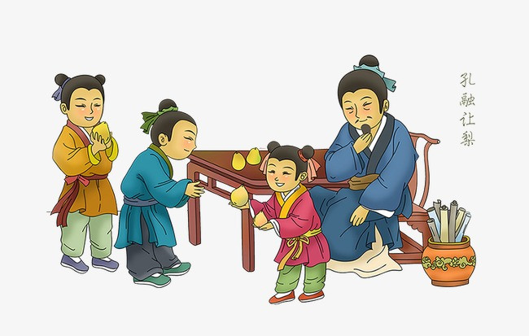

孔融，字文举，东汉时期中国山东曲阜人，是孔子的第二十世孙，是中国古代东汉末文学家。
孔融四岁的时候，和哥哥吃梨，总是拿小的吃。有人问他为什么这么做。他回答说：“小孩子食量小，按道理应该拿小的。”
 中国千百年来流传的一个道德教育故事，这个故事告诉人们，凡事应该遵守公序良俗。
这些都是年幼时就应该知道的道德常识。这是中国古代东汉末文学家 孔融© 的真实故事。
我是 手shou 摇yao 铃ling